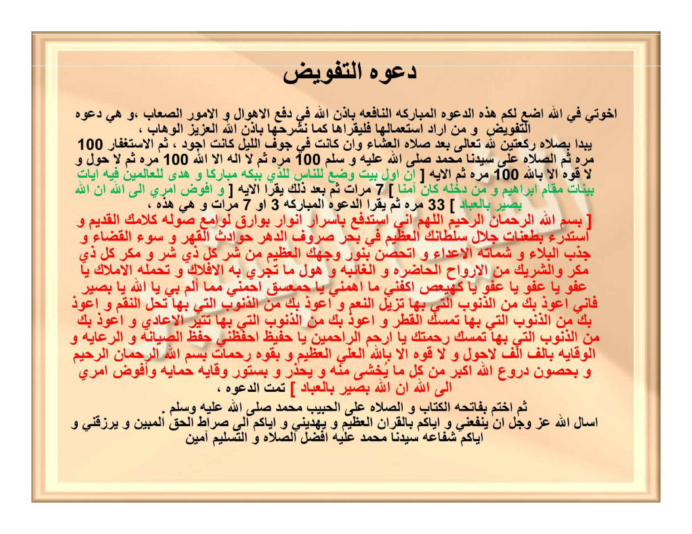

Da'watut-tafwīdhi.
Ikhwatī fillāhi adha'u lakum hādzihid-da'watal-mubārakatan-nāfi'ata bi-idznillāhi fī daf'il-ahwāli wal-umūrish-shi'ābi, wa hiya da'watut-tafwīdhi wa man arāda-sti'mālahā falyaqra'hā kamā nasyrahuhā bi-idznillāhil-'Azīzil-Wahhābi,
Yabda'u bishalāti rak'ataini lillāhi ta'ālā ba'da shalātil-'isyā'i wa in kānat fī jaufil-laili kānat ajwada, tsummal-istighfāru 100 marratin tsummash-shalātu 'alā sayyidinā Muhammadin shallallāhu 'alaihi wa sallama 100 marratin tsumma lā ilāha illallāhu 100 marratin tsumma lā haula wa lā quwwata illā billāhi 100 marratin tsummal-āyatu [ Inna awwala baitin wudhi'a lin-nāsi lalladzī bibakkata mubārakan wa hudan lil-'ālamīna fīhi āyātun bayyinātun maqāmu Ibrāhīma wa man dakhalahū kāna āminan ] 7 marrātin tsumma ba'da dzālika yaqra'ul-āyata [ Wa ufawwidhu amrī ilallāhi innallāha bashīrun bil-'ibādi ] 33 marratan tsumma yaqra'ud-da'watal-mubārakata 3 au 7 marrātin wa hiya hādzihī,
[ Bismillāhir-rahmānir-rahīmi Allāhumma innī astadfi'u bi-asrāri anwāri bawāriqi lawāmi'i shaulati kalāmikal-qadīmi wa astadri'u bitha'anāti jalāli sulthānikal-'azhīmi fī bahri shurūfid-dahri hawāditsal-qahri wa sū'al-qadhā'i wa jadzbal-balā'i wa syamātatal-a'dā'i wa atahashshanu binūri wajhikal-'azhīmi min syarri kulli dzī syarrin wa makri kulli dzī makrin wasy-syarīki minal-arwāhil-hādhirati wal-ghā'ibati wa hauli mā tajrī bihil-aflāku wa tahmiluhul-amlāku yā 'Afuwwu yā 'Afuwwu yā 'Afuwwu yā Kāf-Hā-Yā-'Ain-Shād ikfinī mā ahammanī yā Hā-Mīm-'Ain-Sīn-Qāf ihminī mimmā alamma bī yā Allāhu yā Bashīru fa-innī a'ūdzu bika minadz-dzunūbil-latī bihā tuzīlun-ni'ama wa a'ūdzu bika minadz-dzunūbil-latī bihā tuhillun-niqama wa a'ūdzu bika minadz-dzunūbil-latī bihā tumsikul-qathra wa a'ūdzu bika minadz-dzunūbil-latī bihā tutsīrul-a'ādiya wa a'ūdzu bika minadz-dzunūbil-latī bihā tumsiku rahmataka yā Arhamar-rāhimīna yā Hafīzhu ihfazhnī hifzhash-shiyānati war-ri'āyati wal-wiqāyati bi-alfi alfi lā haula wa lā quwwata illā billāhil-'Aliyyil-'Azhīmi wa biquwwati rahamāti bismillāhir-rahmānir-rahīmi wa bihushūni durū'i Allāhu akbaru min kulli mā yukhsyā minhu wa yuhdzaru wa bisutūri wiqāyati himāyati wa ufawwidhu amrī ilallāhi innallāha bashīrun bil-'ibādi ] tammatid-da'watu,
Tsummakhtim bifātihatil-kitābi wash-shalāti 'alal-habībi Muhammadin shallallāhu 'alaihi wa sallama.
As'alullāha 'azza wa jalla an yanfa'anī wa iyyākum bil-Qur'ānil-'azhīmi wa yahdiyanī wa iyyākum ilā shirāthil-haqqil-mubīni wa yarzuqanī wa iyyākum syafā'ata sayyidinā Muhammadin 'alaihi afdhalush-shalāti wat-taslīmi āmīna.
Doa Tafwīdh (penyerahan urusan kepada Allah).
Wahai saudara-saudaraku karena Allah, aku letakkan untuk kalian doa yang diberkahi lagi bermanfaat ini dengan izin Allah dalam menolak berbagai kengerian dan urusan-urusan yang sulit, yaitu Doa Tafwīdh; barang siapa hendak mengamalkannya maka hendaklah ia membacanya sebagaimana kami jelaskan dengan izin Allah Yang Maha Perkasa lagi Maha Pemberi karunia.
Dimulai dengan melaksanakan shalat dua rakaat karena Allah Ta'ala setelah shalat Isya — dan apabila dikerjakan di tengah malam niscaya lebih utama —, kemudian membaca istighfar 100 kali, kemudian membaca shalawat atas junjungan kita Muhammad shallallahu 'alaihi wa sallam 100 kali, kemudian membaca Lā ilāha illallāh 100 kali, kemudian membaca Lā haula wa lā quwwata illā billāh 100 kali, kemudian membaca ayat: [ Sesungguhnya rumah yang mula-mula dibangun untuk (tempat beribadah) manusia, ialah Baitullah yang di Bakkah (Mekah) yang diberkahi dan menjadi petunjuk bagi semua manusia. Padanya terdapat tanda-tanda yang nyata, (di antaranya) maqam Ibrahim; barang siapa memasukinya (Baitullah itu) menjadi amanlah dia — QS. Āli 'Imrān: 96–97 ] sebanyak 7 kali, kemudian setelah itu membaca ayat: [ Dan aku menyerahkan urusanku kepada Allah; sesungguhnya Allah Maha Melihat akan hamba-hamba-Nya — QS. Ghāfir: 44 ] sebanyak 33 kali, kemudian membaca doa yang diberkahi ini sebanyak 3 atau 7 kali, yaitu:
[ Dengan menyebut nama Allah Yang Maha Pengasih lagi Maha Penyayang. Ya Allah, sesungguhnya aku memohon penolakan — dengan rahasia-rahasia cahaya kilatan kemilau keperkasaan firman-Mu yang qadim, dan aku berlindung dengan hujaman keagungan kekuasaan-Mu yang agung di tengah samudra pergantian zaman — dari berbagai bencana penindasan, buruknya ketetapan takdir, tarikan malapetaka, serta kegembiraan musuh di atas penderitaanku. Dan aku membentengi diri dengan cahaya Wajah-Mu yang agung dari kejahatan setiap pemilik kejahatan, tipu daya setiap pemilik makar, dan persekutuan dari ruh-ruh yang hadir maupun yang gaib, serta dari kengerian apa yang beredar bersama falak-falak dan yang dibawa oleh para malaikat. Wahai Yang Maha Pemaaf, wahai Yang Maha Pemaaf, wahai Yang Maha Pemaaf; wahai Kāf-Hā-Yā-'Ain-Shād, cukupkanlah (lindungilah) aku dari apa yang menyusahkanku; wahai Hā-Mīm-'Ain-Sīn-Qāf, lindungilah aku dari apa yang menimpaku; wahai Allah, wahai Yang Maha Melihat. Sesungguhnya aku berlindung kepada-Mu dari dosa-dosa yang dengannya Engkau melenyapkan nikmat-nikmat, aku berlindung kepada-Mu dari dosa-dosa yang dengannya Engkau menurunkan bencana-bencana pembalasan, aku berlindung kepada-Mu dari dosa-dosa yang dengannya Engkau menahan turunnya hujan, aku berlindung kepada-Mu dari dosa-dosa yang dengannya Engkau membangkitkan musuh-musuh, dan aku berlindung kepada-Mu dari dosa-dosa yang dengannya Engkau menahan rahmat-Mu, wahai Dzat Yang Paling Penyayang di antara para penyayang. Wahai Yang Maha Menjaga, jagalah aku dengan penjagaan pemeliharaan, pengayoman, dan perlindungan, dengan sejuta (seribu kali seribu) Lā haula wa lā quwwata illā billāhil-'Aliyyil-'Azhīm, dengan kekuatan rahmat-rahmat Bismillāhir-rahmānir-rahīm, dengan benteng-benteng baju zirah Allāhu Akbar dari segala apa yang ditakuti dan dikhawatirkan darinya, serta dengan tirai-tirai penjagaan dan perlindungan: Dan aku menyerahkan urusanku kepada Allah; sesungguhnya Allah Maha Melihat akan hamba-hamba-Nya ]. Selesailah doa tersebut.
Kemudian tutuplah dengan Surah al-Fatihah dan shalawat atas al-Habib Muhammad shallallahu 'alaihi wa sallam.
Aku memohon kepada Allah 'azza wa jalla agar memberikan manfaat kepadaku dan kepada kalian dengan Al-Qur'an yang agung, menunjuki aku dan kalian ke jalan kebenaran yang nyata, serta menganugerahkan kepadaku dan kepada kalian syafaat junjungan kita Muhammad — semoga tercurah atas beliau seutama-utama shalawat dan salam —, Āmīn.
